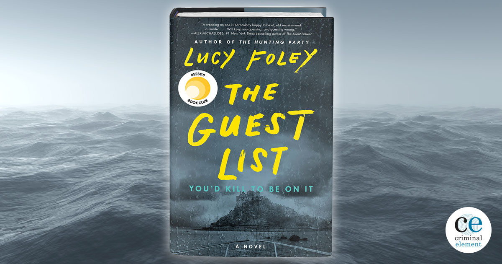

All of the wedding party are here now. Things are about to crank into another gear: there’s the rehearsal dinner
this evening, with the chosen guests, so the wedding really begins tonight.
I’ve put the champagne on ice ready for the predinner drinks. It’s vintage Bollinger: eight bottles of it, plus the
wine for dinner and a couple of crates of Guinness—all as per the bride’s instructions. It is not for me to comment,
but it seems rather a lot. They’re all adults, though. I’m sure they know how to restrain themselves. Or maybe not.
That best man seems a bit of a liability—all of the ushers do, to be honest. And the bridesmaid—the bride’s half sister—
I’ve seen her on her solitary wanderings of the island, hunched over and walking fast like she’s trying to outpace something.
You learn all the insider secrets, doing this sort of work. You see the things no one else is privileged to see. All the
gossip that the guests would kill to have. As a wedding planner you can’t afford to miss anything. You have to be alert to
every detail, all the smaller eddies beneath the surface. If I didn’t pay attention, one of those currents could grow into
a huge riptide, destroying all my careful planning. And here’s another thing I’ve learned—sometimes the smallest currents are the strongest.
I move through the Folly’s downstairs rooms, lighting the blocks of turf in the grates, so they can get a good smolder on for this
evening. Freddy and I have started cutting and drying our own turf from the bog, as has been done for centuries past. The smoky,
earthy smell of the turf fires will add to the sense of local atmosphere. The guests should like that. It may be midsummer but it
gets cool at night on the island. The Folly’s old stone walls keep the warmth out and aren’t so good at holding it in.
Today has been surprisingly warm, at least by the standards of these parts, but the same’s not looking likely for tomorrow. The end
of the weather forecast I caught on the radio mentioned wind. We get the brunt of all the weather here; often the storms are much
worse than they end up being on the mainland, as if they’ve exhausted themselves on us. It’s still sunny out but this afternoon the
needle on the old barometer in the hallway swung from fair to changeable. I’ve taken it down. I don’t want the bride to see it.
Though I’m not sure that she is the sort to panic. More the sort to get angry and look for someone to blame. And I know just who
would be in the firing line.
“Freddy,” I call into the kitchen, “will you be starting on the dinner soon?”
“Yeah,” he calls back, “got it all under control.”
Tonight they’ll eat a fish stew based on a traditional Connemara fisherman’s chowder:
smoked fish, lots of cream. I ate it the first time I ever visited this place, when there
were still people here. This evening’s will be a more refined take on the usual recipe, as
this is a refined group we have staying. Or at least I suppose they like to think of themselves
as such. We’ll see what happens when the drink hits them.